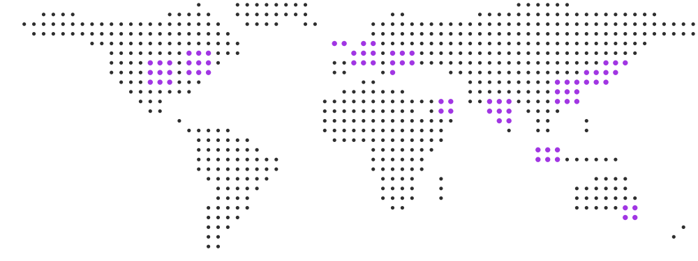

1,000+ pages of Olympiad guides
Biology, Physics, Astrophysics and Earth Science, plus a Calculus primer — written by medalists, published free, and read 78,000 times. No login, no paywall, no trial.
What Pandorax has changed for the students who use it, and how far the work has reached.
Why we exist
Pandorax is run by the students who won the Olympiads they now teach. We publish the preparation we wish we'd had — a thousand pages of it, free, to anyone with an internet connection — because the hardest barrier to international science isn't talent. It's knowing someone who has already done it.
18,000+
Students reached
20+
Countries
1,000+
Pages of free curriculum
50+
Instructors worldwide
Where they study
A student in Singapore and a student in Ohio open the same guide, sit the same problem sets, and ask the same instructors for help.

Biology, Physics, Astrophysics and Earth Science, plus a Calculus primer — written by medalists, published free, and read 78,000 times. No login, no paywall, no trial.
NACLO, USABO, USAPhO, USNCO, USESO, USAAAO and Machine Learning Research — every one beginner-friendly, every one taught live by people who medaled at the international round.
High school and college students at MIT, Stanford and Caltech, all nationally or internationally recognised in the subject they teach. They were sitting these exams two years ago.
[PLACEHOLDER — the number this page most needs.] Semifinalists, national-camp invitees and medalists who came through a Pandorax bootcamp. Count them from our own rosters before this page ships; nothing else on it proves as much.
The loop
Nobody here aged out of the thing they loved. The people who sat in a Pandorax bootcamp as competitors came back to run one — which is the only reason a free programme taught by medalists can keep existing at all.
 Varyan Jain
[COHORT YEAR] → today
Varyan Jain
[COHORT YEAR] → today
“[ONE LINE, IN THEIR OWN WORDS]”
“[ONE LINE, IN THEIR OWN WORDS]”
“[ONE LINE, IN THEIR OWN WORDS]”
[N] of our 50+ instructors sat in a Pandorax bootcamp before they taught one. [PLACEHOLDER — count this from the instructor roster.]
“
Without the concrete and specific help the wonderful instructors provided, and the niche tips they shared through our problem solving sessions, I wouldn't even have been close to becoming alternate for Team USA.
Rehan Babu, NACLO Bootcamp student
© 2026 by Pandorax. All Rights Reserved.